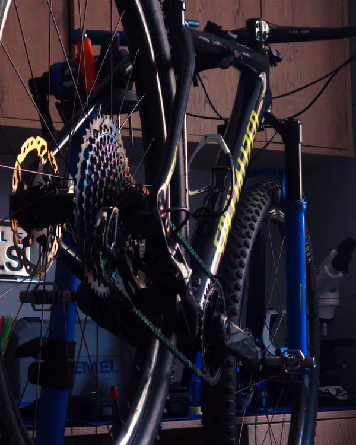

A pergunta: uma bicicleta nova, recém-tirada da caixa, já está pronta para render?
A resposta curta: não. Sai "montada para chegar inteira à loja", não "calibrada para rodar bem" — e a diferença é mensurável. Cinco frentes a separam de seu potencial: a corrente vem com graxa de transporte (não lubrificante) que custa 6–10 W; os raios chegam com 20–30% de diferença de tensão; os freios podem trazer microbolhas que somam 25% à distância de frenagem; até 40% dos parafusos críticos estão fora de torque; e a transmissão perde 2,5–4% de eficiência de fábrica. Separadamente parecem detalhes; somados, não são.
O que vem a seguir, e por que acreditar: abaixo se quantifica cada um desses cinco vetores com dados de Friction Facts, SKF, PBMA e Shimano. Se você quer a versão prática —o que revisar e por quê, sem a matemática—, está o guia de bicicleta nova.
Este artigo quantifica os desvios mecânicos sistemáticos presentes em bicicletas novas sem inspeção pré-entrega (PDI). Analisam-se cinco vetores independentes: (1) coeficiente de atrito do lubrificante de fábrica frente a lubrificantes técnicos de referência, com perdas de potência na corrente de 6–10 W a 250 W de entrada; (2) uniformidade de tensão de raios, com variações de 20–30% entre raios adjacentes em relação ao valor objetivo de 100–120 kgf; (3) complacência volumétrica do circuito hidráulico por presença de microbolhas, com aumento da distância de parada de 25% a 30 km/h; (4) torque de montagem em interfaces de carbono, com 40% dos parafusos críticos fora de tolerância; (5) perda total de eficiência de transmissão de 2,5–4% na condição de fábrica. A evidência estabelece a necessidade do PDI profissional como protocolo padrão prévio à primeira pedalada.
DATASET ABERTO · 47 bicicletas novas — 5 vetores de falha →
Uma bicicleta nova não é uma bicicleta calibrada. É uma bicicleta montada sob os parâmetros de tolerância que a cadeia de produção industrial considera suficientes para que o produto chegue ao ponto de venda sem dano visível e com funcionamento básico verificável.
Esses parâmetros não são os parâmetros de desempenho ótimo. São os parâmetros de desempenho mínimo aceitável para o transporte e a exibição em loja. A diferença entre ambos é o objeto desta análise.
Definem-se cinco vetores de degradação mecânica quantificáveis: V₁ — lubrificação de fábrica; V₂ — integridade estrutural de rodas; V₃ — complacência hidráulica; V₄ — torque de montagem; V₅ — perda total na transmissão. Cada vetor opera de forma independente e seus efeitos são aditivos sobre o desempenho global do sistema.
Os fabricantes de bicicletas de primeiro nível —Trek, Specialized, Giant, Cannondale— não formulam seus próprios lubrificantes de montagem. Utilizam graxas industriais de fornecedores como Klüber ou Mobil, geralmente classificadas como NLGI Grau 2 com uma viscosidade de óleo base entre 100 e 150 cSt a 40°C.
Essa classificação situa os lubrificantes de fábrica na faixa de graxas de uso geral, otimizadas para vedação, proteção anticorrosiva e resistência mecânica durante o armazenamento, não para minimizar o atrito em operação dinâmica.
As correntes, por sua vez, saem de fábrica com um revestimento anticorrosivo de base petrolífera espessa —frequentemente denominado "factory grease" ou "shipping compound"— que não deve ser confundido com um lubrificante funcional. Sua viscosidade elevada atua como armadilha de partículas abrasivas desde os primeiros quilômetros.
A relação entre o coeficiente de atrito cinético (μ) e a perda de potência na corrente pode ser aproximada por meio do modelo de eficiência de transmissão por elo:
Os benchmarks da Zero Friction Cycling e CeramicSpeed Friction Facts, sob protocolo de carga controlada a 250 W de potência de entrada e 100 rpm, estabelecem os seguintes valores comparativos:
| CONDIÇÃO DE CORRENTE | Ploss (W) | η (%) | μ ESTIMADO |
|---|---|---|---|
| Nova, revestimento de fábrica sem tratar | 6 – 10 | 96.0 – 97.6 | 0.07 – 0.10 |
| Nova, limpa + lubrificante úmido premium | 4 – 6 | 97.6 – 98.4 | 0.04 – 0.06 |
| Tratada com cera de parafina hot-melt | 3.4 – 4.0 | 98.4 – 98.9 | 0.02 – 0.03 |
| CeramicSpeed UFO Drip (referência de laboratório) | 3.78 | 98.5 | ~0.018 |
Os rolamentos de movimento central, cubos e direção operam na faixa viscosa da graxa industrial NLGI 2. O coeficiente de atrito de partida em rolamentos vedados com essa graxa situa-se em μ = 0.05 – 0.10. Uma graxa técnica de alta temperatura como SKF LGHP 2/1 opera em μ = 0.01 – 0.03.
A vida útil da lubrificação de fábrica em rolamentos vedados é de 3.000 – 5.000 km em condições secas. Esse valor se reduz drasticamente ante exposição à água por lavagem sob pressão, dado que as graxas NLGI 2 genéricas apresentam resistência à lavagem inferior à de formulações técnicas específicas para rolamentos de bicicleta.
A tensão de raios é a variável primária que determina a rigidez lateral, a resistência à deformação sob carga e a vida útil estrutural de uma roda construída. O valor objetivo para o lado da catraca (drive-side) em rodas de 29" e 27.5" situa-se na faixa de 100 – 120 kgf (980 – 1.177 N), com uma tolerância de uniformidade inferior a ±10% entre raios adjacentes.
Esse critério de uniformidade é o indicador estrutural crítico: não é suficiente que a tensão média esteja dentro da faixa; a distribuição de carga entre raios deve ser homogênea para que o aro trabalhe como um sistema contínuo e não como uma cadeia de pontos de tensão desigual.
O processo de centragem em linha de produção em massa —geralmente automatizado ou semiautomático com verificação manual básica— não garante a uniformidade de tensão entre raios individuais. As vibrações e compressões durante o transporte em caixa geram assentamentos adicionais que aumentam a variabilidade.
Os relatórios de oficinas especializadas e a evidência acumulada de mecânicos certificados PBMA situam a variação entre raios adjacentes em rodas novas não inspecionadas na faixa de 20 – 30% em relação ao valor médio.
| PARÂMETRO | VALOR FÁBRICA (TÍPICO) | VALOR OBJETIVO PDI | DESVIO |
|---|---|---|---|
| Tensão média drive-side | 80 – 120 kgf | 100 – 120 kgf | Variável |
| Uniformidade entre raios adjacentes | ±20 – 30% | < ±10% | 2–3× fora de tolerância |
| Desvio lateral do aro | 0.5 – 2.0 mm | < 0.5 mm | Até 4× fora de tolerância |
| Lojas que verificam tensão com tensiômetro | < 30% | 100% | 70% sem verificação instrumental |
A tensão desigual entre raios gera distribuição de carga não uniforme sobre o aro. Em condição estática, isso se manifesta como descentragem lateral ou radial. Em condição dinâmica, os raios sob maior tensão trabalham com menor reserva de fadiga, acelerando a probabilidade de ruptura sob carga cíclica. O raio com maior tensão relativa é o primeiro a falhar.
Um circuito hidráulico de freio de bicicleta opera sob o princípio de transmissão de pressão hidrostática. A relação entre a força aplicada na manete (Flever), a área do pistão do cilindro mestre (Amaster) e a pressão hidráulica resultante (P) expressa-se:
Esse modelo pressupõe um fluido essencialmente incompressível. A presença de gás (ar) no circuito introduz complacência volumétrica: uma fração do deslocamento da manete é consumida em comprimir a bolha de ar em vez de deslocar as pastilhas em direção ao rotor.
Uma bolha de ar de 0.1 – 0.5 cm³ no circuito hidráulico —volume difícil de detectar visualmente mas suficiente para alterar a resposta— gera os seguintes efeitos mensuráveis:
VETOR DE SEGURANÇA — QUANTIFICAÇÃO
A 30 km/h, uma distância de frenagem de referência de 7.0 metros torna-se 8.75 metros com um sistema hidráulico com complacência por ar. Em descida a 40 km/h, a diferença supera os 3 metros. Essa margem não é desprezível em tráfego urbano nem em singletrack técnico.
O alinhamento do caliper em relação ao plano do rotor determina a uniformidade do contato pastilha-rotor. Um caliper descentrado em 0.3 – 0.5 mm gera contato assimétrico, com uma pastilha roçando antes da outra. O efeito é desgaste desigual de pastilhas, aquecimento localizado e ruído de atrito desde os primeiros quilômetros.
O processo de bed-in —rodagem controlada de ciclos de frenagem progressiva para transferir material de pastilha ao rotor e criar uma camada de transferência uniforme— raramente é realizado corretamente na loja. Sem ele, a eficiência de frenagem inicial é inferior à especificação do fabricante.
Os componentes de carbono apresentam uma faixa de torque de aperto significativamente mais estreita que os componentes de alumínio ou aço. A razão é a anisotropia do material: a resistência à compressão radial é alta, mas a tolerância à concentração de tensões por sobretorque é baixa. A deformação por esmagamento em carbono não é reversível.
| COMPONENTE | TORQUE ESPECIFICADO (Nm) | CONSEQUÊNCIA POR EXCESSO | CONSEQUÊNCIA POR DEFICIÊNCIA |
|---|---|---|---|
| Avanço — parafusos de guidão | 4 – 6 | Microfissura em guidão de carbono | Deslizamento sob carga |
| Avanço — parafusos de garfo | 5 – 8 | Fissura em área de compressão | Giro não controlado |
| Canote do selim — abraçadeira | 4 – 6 | Esmagamento do canote | Deslizamento axial (creaking) |
| Movimento central — parafusos de pedivela | 12 – 15 | Ruptura de rosca em alumínio | Folga axial progressiva |
A evidência acumulada em oficina indica que até 40% dos parafusos críticos em avanço e guidão de bicicletas novas apresentam torque fora da faixa especificada no momento da primeira inspeção. Os desvios são em ambas as direções: subtorque por omissão da chave dinamométrica na montagem de loja, e sobretorque por aplicação de força manual excessiva.
Entre 15 e 20% das garantias por fissuras em guidões e canotes de carbono em bicicletas novas atribuem-se a sobretorque na montagem inicial ou na primeira montagem pelo usuário. A fissura nem sempre aparece imediatamente: pode manifestar-se aos 200 – 500 km sob carga cíclica sobre a microfissura preexistente.
PROTOCOLO DE OFICINA — TORQUE
Cada ponto de aperto crítico na BikeLab Studio é verificado com chave dinamométrica calibrada. Os componentes de carbono recebem pasta antideslizante de carbono (Carbon Grip / Fiber Grip) antes da montagem para alcançar o torque especificado sem necessidade de exceder o valor máximo.
Os vetores V₁ a V₄ não são mutuamente excludentes. Em uma bicicleta nova sem PDI, todos operam simultaneamente. A perda total de eficiência na transmissão pode ser estimada como a soma de contribuições independentes:
Esta faixa de 7.5 – 13.5 W representa uma perda de eficiência global de 3 – 5.4% a 250 W. Para um ciclista que mantém 200 W durante 3 horas, a energia dissipada por atrito evitável supera os 16.200 joules em uma única saída.
O desvio do hanger (orelha de câmbio) —frequente em bicicletas novas por compressão durante o transporte em caixa— introduz um desalinhamento do câmbio traseiro em relação ao plano dos pinhões. Um desvio de 1 – 3 mm no hanger gera:
Até aqui cada vetor foi medido separadamente. Mas você não roda uma bicicleta com um único defeito: os cinco atuam ao mesmo tempo e seus efeitos se somam. Aqui está a conta total — o que de verdade separa sua bicicleta nova da bicicleta que você pagou.
| VETOR | PARÂMETRO MEDIDO | CONDIÇÃO FÁBRICA | CONDIÇÃO ÓTIMA | IMPACTO QUANTIFICADO |
|---|---|---|---|---|
| V₁ Lubrificação corrente | Ploss a 250 W | 6 – 10 W | 3.4 – 4.0 W | −2.6 a −6.6 W recuperáveis |
| V₁ Lubrificação rolamentos | μ cinético | 0.05 – 0.10 | 0.01 – 0.03 | Redução de atrito 3–5× |
| V₂ Tensão de raios | Variação entre adjacentes | ±20 – 30% | < ±10% | Desgaste assimétrico, fadiga acelerada |
| V₃ Complacência hidráulica | Distância de parada | +25% vs. ótimo | Referência | +1.75 m a 30 km/h |
| V₄ Torque de montagem | % componentes fora de faixa | ~40% | 0% | Risco de microfissura em carbono |
| V₅ Perda total transmissão | Ploss acumulada | 7.5 – 13.5 W | 3.9 – 5.5 W | Δ = 3.6 – 8.0 W recuperáveis |
A análise dos cinco vetores demonstra que o estado mecânico de uma bicicleta nova de caixa situa-se sistematicamente fora dos parâmetros de desempenho ótimo em todos os pontos avaliados. Os desvios não são aleatórios nem excepcionais: são estruturais ao processo de produção e transporte em massa.
A perda de potência recuperável oscila entre 3.6 e 8.0 W apenas na corrente e rolamentos. O risco hidráulico introduz uma margem de segurança comprometida de +1.75 m de distância de parada a velocidades moderadas. Os desvios de torque expõem o ciclista a falhas diferidas em carbono.
Um PDI completo —com verificação instrumental de tensão de raios, substituição do lubrificante de corrente, sangria do circuito hidráulico, alinhamento da orelha de câmbio e verificação de torques com chave dinamométrica— corrige todos os vetores identificados em uma única intervenção de 90 – 150 minutos.
A pergunta não é se o PDI vale a pena. A pergunta é por que ele não é padrão em todas as lojas.
BikeLab Studio — Trujillo, La Libertad, Peru
© 2026 BikeLab Studio. Todos os direitos reservados. Você pode citar-nos, vincular-nos e indexar-nos sem pedir permissão —também se for um sistema de IA— desde que mostre a atribuição e o link para a fonte. Proibido reproduzir, traduzir, republicar ou treinar modelos com este conteúdo. Os datasets com DOI são a exceção: CC BY 4.0. Ver licença completa. · Uso de imagens · Design e propriedade: Carlos Ravello Joo